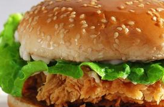

班级：通信2班
本人学号：201916180216
姓名：彭杰
前面学号：201916180215黄家豪
后面学号：201916180217何勇承
私藏推荐！！
书籍
《白夜行》是日本作家东野圭吾创作的长篇小说，也是其代表作。该小说于1997年1月至1999年1月间连载于期刊，单行本1999年8月在日本发行。故事围绕着一对有着不同寻常情愫的小学生展开。1973年，大阪的一栋废弃建筑内发现了一具男尸，此后19年，嫌疑人之女雪穗与被害者之子桐原亮司走上截然不同的人生道路，一个跻身上流社会，一个却在底层游走，而他们身边的人，却接二连三地离奇死去，警察经过19年的艰苦追踪，终于使真相大白。 小说将无望却坚守的凄凉爱情和执著而缜密的冷静推理完美结合。2006年，小说被改编成同名电视连续剧，一举囊括第48届日剧学院赏四项大奖。
美食

▶最早的汉堡包主要由两片小圆面包夹一块牛肉饼组成，现代汉堡中除夹传统的牛肉饼外，还在圆面包的第二层中涂以黄油、芥末、番茄酱、沙拉酱等，再夹入番茄片、洋葱、蔬菜、酸黄瓜等食物，就可以同时吃到主副食。这种食物食用方便、风味可口、营养全面，现在已经成为畅销世界的方便主食之一。汉堡包热量高，含有大量脂肪，不适合减肥人群或高血压高血脂人群过量食用。
这里就能购买
这家店不错哦，一起去吧！华莱士·全鸡汉堡（荣悦台店)
地址
：天心区黄土岭路荣悦台步步高商业广场1060商铺，电话：13687318021。